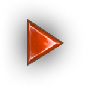
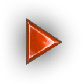
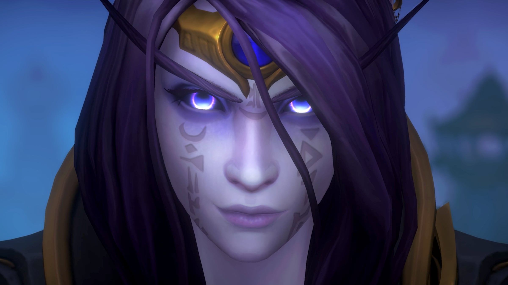

A escuridão chama

Uma nova aventura incrível há 20 anos em desenvolvimento
×
 


Neste capítulo da Saga da Alma do Mundo™
Defenda Azeroth das sombras das profundezas
Aventure-se por mundos subterrâneos nunca vistos cheios de maravilhas secretas e perigos à espreita, até chegar às profundezas do império nerubiano, onde o terrível Emissário do Caos está reunindo forças aracnídeas para devastar Azeroth.

Viaje a Khaz Algar
Explore o mundo sob Azeroth
Sob a superfície de Azeroth, há um mundo gigantesco, repleto de perigos e esperando para ser explorado


Novos Recursos Evergreen